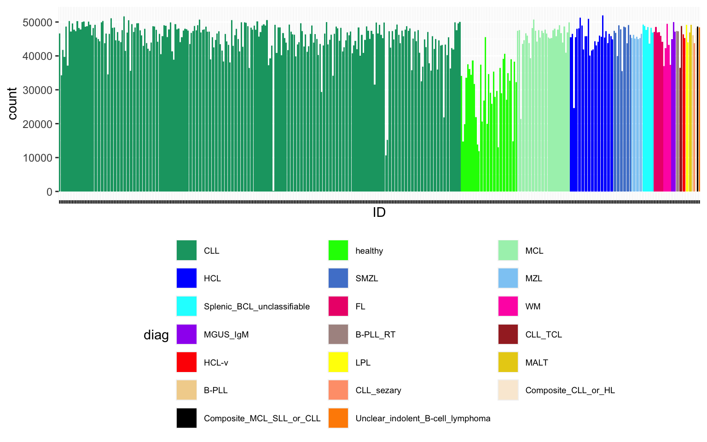

load("output/seSpec.RData")
diagOrd <- colData(seSpec) %>%
as_tibble(rownames = "smpID") %>%
group_by(diag) %>%
summarise(n = length(smpID)) %>%
arrange(desc(n)) %>%
pull(diag)
smpAnno <- colData(seSpec) %>%
as_tibble(rownames = "smpID") %>%
mutate(diag = factor(diag, levels = diagOrd))
smpAnno <- smpAnno[order(match(smpAnno$diag, diagOrd)), ]
smpAnno$ID <- factor(smpAnno$ID, levels = smpAnno$ID)
preData <- assays(seSpec)$log2 %>% as_tibble(rownames = "protID") %>%
pivot_longer(-protID, names_to = "smpID", values_to = "count") %>%
filter(!is.na(count)) %>%
left_join(smpAnno)Joining with `by = join_by(smpID)`cusCols <- c("#15A371", "green", "#A8F0BA", "blue", "#5083D1", "#8ECCF5", "cyan",
"#ED1379", "maroon1", "purple", "#AD9490", "brown", "red", "yellow",
"#E8CF15", "#F2D39B", "lightsalmon1", "antiquewhite", "black")
ggplot(preData, aes(x = ID, y = count, fill = diag)) +
geom_bar(stat = "identity") +
theme(axis.text.x = element_blank(), legend.position = "bottom", legend.text = element_text(size = 7)) +
guides(fill = guide_legend(nrow = 7, byrow = TRUE)) + scale_fill_manual(values = cusCols)